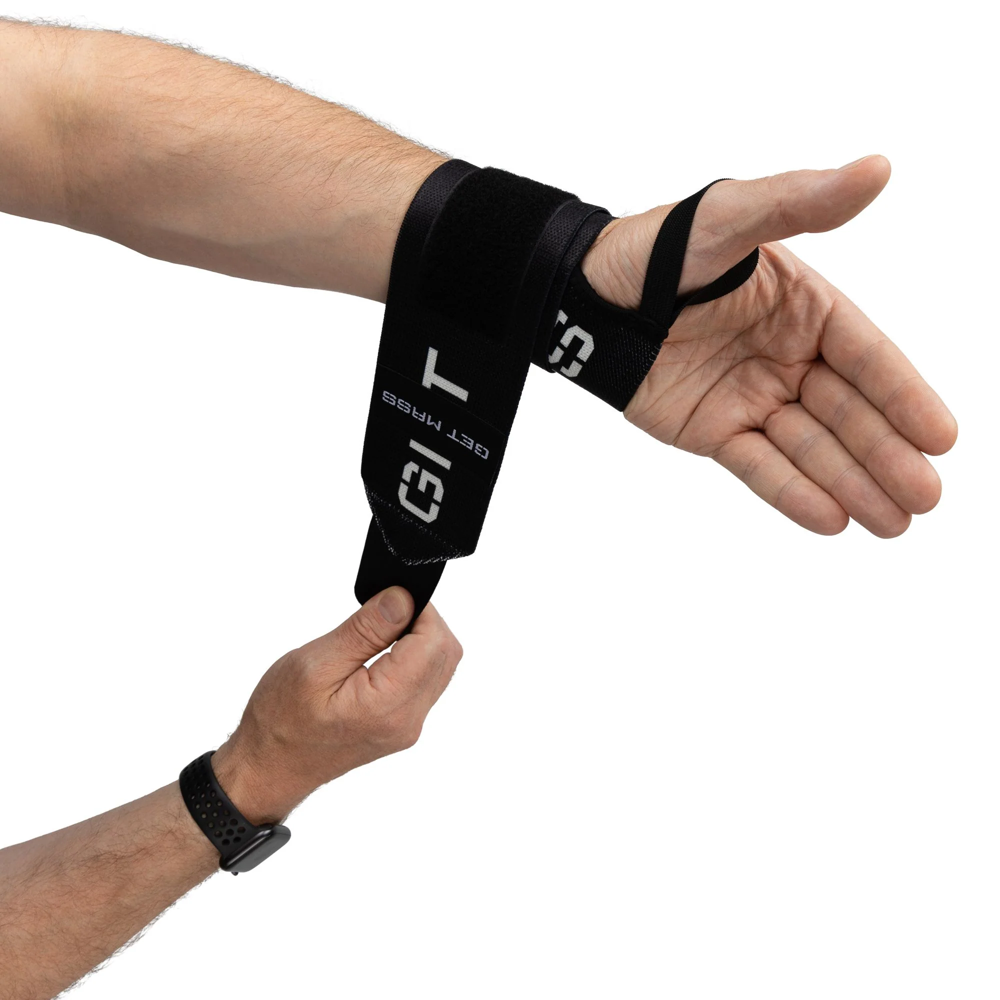
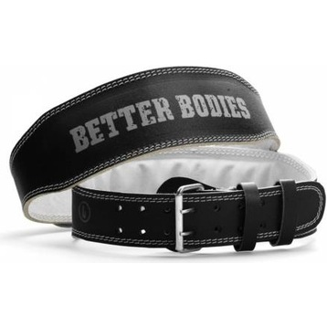

Fitness Ausrüstung
Straps
Die Straps sind so konzipiert, dass sie höchsten Komfort bieten. Unterstützung und Stabilität beim schweren Heben, Krafttraining und Kraftsport. Sie maximieren jede Wiederholung und verbessern die Hebeform.
Eigenschaften
- Hilft Handgelenksverletzungen vorzubeugen.
- Elastisch und vollständig verstellbar, Einheitsgröße.
- Daumenschlaufe zum einfachen Wickeln.
- Hochwertiges, langlebiges Material.
- Äußerst bequem.
- Starker Klettverschluss.
Lifting Straps

Stehen in deinem Trainingsplan Deadlift oder schweres Rudern mit Kurz- und Langhanteln? Bei hohen Gewichten ist oftmals die Griffkraft zu schwach und die Hände öffnen sich. Die Übung muss dann abgebrochen werden, obwohl der eigentliche Zielmuskel (die Rückenmuskulatur), noch längst nicht erschöpft ist. Genau da kommen die Lifting Straps von GymPerformance zum Zug; sie helfen, das Gewicht fest in der Hand zu halten, ohne dass das Gewicht auf Grund fehlender Griffkraft abrutscht.
Gym Belt
Der Gürtel sorgt für gerade Haltung und einen stabilen Rumpf, damit du buchstäblich mehr bewegst; sowohl im Leben als auch an der Barbell. Um die Abmessungen zu checken, kannst du dir ganz simpel ein Maßband über die Hüfte legen, um ungefähre Richtwerte zu erhalten.
Eigenschaften
- Anatomisch geformt.
- Vorne ist er etwas breiter geschnitten um den Bauch gut zu unterstützen.
- 14cm breite Rückseite.
- Starker Klettverschluss- bietet viel Halt und ist einfach im Gebrauch!
- Atmungsaktiv dank Belüftungslöcher an der Rückseite.
- Waschbar.